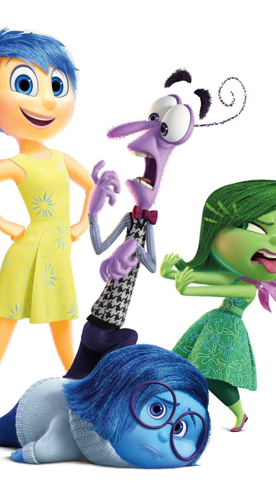
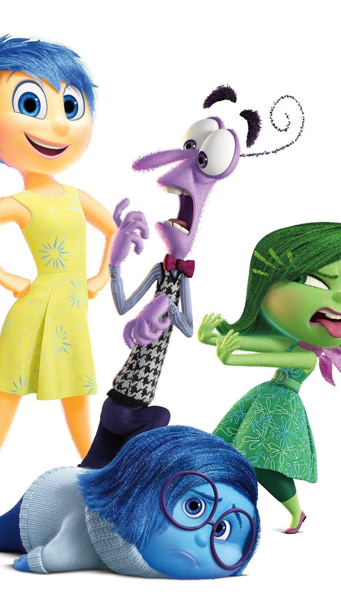

Sintomas
Los signos y síntomas de depresión en los adolescentes incluyen un cambio en la actitud y el comportamiento previos del adolescente que pueden provocar angustia y dificultades importantes en la escuela o el hogar, en actividades sociales o en otros aspectos de la vida.
Los síntomas de depresión pueden variar en su gravedad, pero los cambios en las emociones y el comportamiento del adolescente pueden incluir los siguientes ejemplos.
Cambios emocionales
Debes prestar atención a los cambios emocionales, tales como:
Sentimientos de tristeza, los cuales pueden incluir episodios de llanto sin razón aparente
Frustración o sentimientos de ira, incluso por asuntos menores
Sentimientos de desesperanza o vacío
Estado de ánimo irritable o molesto
Pérdida del interés o del placer en las actividades cotidianas
Pérdida de interés en familiares y amigos o estar en conflicto con ellos
Autoestima baja
Sentimientos de falta de valoración de sí mismo o culpa
Fijación en fallas pasadas o autoinculpación o autocrítica excesiva
Sensibilidad extrema al rechazo o al fracaso, y excesiva necesidad de aprobación
Dificultad para pensar, concentrarse, tomar decisiones y recordar cosas
Sensación continua de que la vida y el futuro son sombríos y desalentadores
Pensamientos recurrentes de muerte o suicidio
Cambios en el comportamiento
Debes estar atento a los cambios en el comportamiento, como los siguientes:
Cansancio y pérdida de energía
Insomnio o dormir demasiado
Cambios en el apetito: disminución del apetito y pérdida de peso, o aumento de antojos de alimentos y aumento de peso
Consumo de alcohol o drogas
Agitación o inquietud: por ejemplo, caminar de un lado a otro, retorcer las manos o ser incapaz de quedarse quieto
Disminución de la agilidad mental, la rapidez del habla o los movimientos corporales
Quejas frecuentes sobre dolores de cabeza y dolores de cabeza inexplicables, que pueden incluir visitas frecuentes a la enfermería de la escuela
Aislamiento social
Mal rendimiento escolar o ausencias frecuentes a la escuela
Menos atención a la higiene personal o la apariencia
Arrebatos de ira, comportamiento perturbador o riesgoso, u otros malos comportamientos
Autolesión: por ejemplo, cortes, quemaduras o perforaciones excesivas o tatuajes
Plan suicida o intento de suicidio
¿Qué es normal y qué no?
Puede resultar difícil notar la diferencia entre los altibajos en el estado de ánimo que simplemente forman parte de la vida de los jóvenes y la depresión adolescente. Habla con tu hijo adolescente. Intenta determinar si tu hijo es capaz de manejar sentimientos difíciles o si la vida le parece abrumadora.


 
